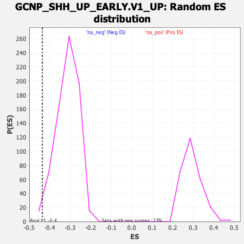

| | | Dataset | DE_genes |
| Phenotype | NoPhenotypeAvailable |
| Upregulated in class | na_neg |
| GeneSet | GCNP_SHH_UP_EARLY.V1_UP |
| Enrichment Score (ES) | -0.436717 |
| Normalized Enrichment Score (NES) | -1.3922347 |
| Nominal p-value | 0.016528925 |
| FDR q-value | 0.17944779 |
| FWER p-Value | 0.926 |
Table: GSEA Results Summary
 Fig 1: Enrichment plot: GCNP_SHH_UP_EARLY.V1_UP
Fig 1: Enrichment plot: GCNP_SHH_UP_EARLY.V1_UP
Profile of the Running ES Score & Positions of GeneSet Members on the Rank Ordered List
| PROBE | GENE SYMBOL | GENE_TITLE | RANK IN GENE LIST | RANK METRIC SCORE | RUNNING ES | CORE ENRICHMENT | | 1 | GPATCH2 | | | 371 | 2.342 | -0.0016 | No |
| 2 | CD55 | | | 413 | 2.110 | 0.0161 | No |
| 3 | VHL | | | 500 | 1.776 | 0.0276 | No |
| 4 | TOP2A | | | 533 | 1.653 | 0.0415 | No |
| 5 | IRF5 | | | 629 | 1.404 | 0.0489 | No |
| 6 | AZIN1 | | | 1107 | 0.749 | 0.0250 | No |
| 7 | MRPL9 | | | 1248 | 0.642 | 0.0221 | No |
| 8 | NCAM2 | | | 1305 | 0.610 | 0.0243 | No |
| 9 | AURKB | | | 1412 | 0.561 | 0.0228 | No |
| 10 | COX7B | | | 1477 | 0.528 | 0.0237 | No |
| 11 | DHODH | | | 1529 | 0.506 | 0.0253 | No |
| 12 | RLIM | | | 1666 | 0.449 | 0.0207 | No |
| 13 | ELOVL2 | | | 1841 | 0.374 | 0.0130 | No |
| 14 | NABP1 | | | 1909 | 0.352 | 0.0120 | No |
| 15 | SNORD22 | | | 1940 | 0.345 | 0.0134 | No |
| 16 | FOXK1 | | | 1981 | 0.333 | 0.0140 | No |
| 17 | ATL2 | | | 2131 | 0.287 | 0.0071 | No |
| 18 | LOXL2 | | | 2312 | 0.242 | -0.0023 | No |
| 19 | FAM220A | | | 2478 | 0.213 | -0.0111 | No |
| 20 | CHEK1 | | | 2498 | 0.207 | -0.0103 | No |
| 21 | OXNAD1 | | | 2986 | 0.141 | -0.0407 | No |
| 22 | RETN | | | 3062 | 0.135 | -0.0443 | No |
| 23 | EPB41L4B | | | 3127 | 0.128 | -0.0472 | No |
| 24 | KIF1A | | | 3131 | 0.128 | -0.0462 | No |
| 25 | E2F3 | | | 3599 | 0.092 | -0.0758 | No |
| 26 | ANLN | | | 3682 | 0.088 | -0.0803 | No |
| 27 | KIFC1 | | | 3758 | 0.084 | -0.0844 | No |
| 28 | FCGRT | | | 4149 | 0.062 | -0.1092 | No |
| 29 | MAPK14 | | | 4156 | 0.061 | -0.1090 | No |
| 30 | MYT1L | | | 4221 | 0.057 | -0.1126 | No |
| 31 | CR2 | | | 4322 | 0.052 | -0.1187 | No |
| 32 | TYMS | | | 4411 | 0.047 | -0.1240 | No |
| 33 | RIMKLB | | | 4615 | 0.035 | -0.1369 | No |
| 34 | TRAIP | | | 4752 | 0.028 | -0.1455 | No |
| 35 | KIF1B | | | 5069 | 0.012 | -0.1660 | No |
| 36 | PDS5B | | | 5125 | 0.010 | -0.1695 | No |
| 37 | FBXO45 | | | 5203 | 0.006 | -0.1744 | No |
| 38 | MCM10 | | | 5241 | 0.004 | -0.1768 | No |
| 39 | RHPN2 | | | 5334 | -0.001 | -0.1828 | No |
| 40 | GGPS1 | | | 5382 | -0.003 | -0.1858 | No |
| 41 | SMC2 | | | 5422 | -0.006 | -0.1883 | No |
| 42 | IRF6 | | | 5442 | -0.006 | -0.1895 | No |
| 43 | ARL5A | | | 5823 | -0.027 | -0.2140 | No |
| 44 | PRC1 | | | 6388 | -0.064 | -0.2502 | No |
| 45 | MCM5 | | | 6419 | -0.067 | -0.2515 | No |
| 46 | STAG2 | | | 6460 | -0.070 | -0.2535 | No |
| 47 | LATS1 | | | 6625 | -0.082 | -0.2634 | No |
| 48 | RPL39L | | | 6720 | -0.090 | -0.2686 | No |
| 49 | MRPL50 | | | 6797 | -0.095 | -0.2727 | No |
| 50 | SPDL1 | | | 6817 | -0.096 | -0.2730 | No |
| 51 | UBE2T | | | 6858 | -0.099 | -0.2746 | No |
| 52 | MYB | | | 6874 | -0.100 | -0.2746 | No |
| 53 | MATR3 | | | 6890 | -0.102 | -0.2746 | No |
| 54 | MAN1A1 | | | 7119 | -0.120 | -0.2884 | No |
| 55 | OXSM | | | 7174 | -0.124 | -0.2907 | No |
| 56 | CKS2 | | | 7267 | -0.133 | -0.2954 | No |
| 57 | NAP1L1 | | | 7475 | -0.150 | -0.3075 | No |
| 58 | VPS4B | | | 7489 | -0.151 | -0.3068 | No |
| 59 | SRSF1 | | | 7647 | -0.165 | -0.3155 | No |
| 60 | MPDZ | | | 7671 | -0.168 | -0.3154 | No |
| 61 | AURKA | | | 7679 | -0.169 | -0.3142 | No |
| 62 | TNPO1 | | | 7881 | -0.187 | -0.3255 | No |
| 63 | KBTBD7 | | | 7941 | -0.193 | -0.3275 | No |
| 64 | TNNC2 | | | 7973 | -0.196 | -0.3276 | No |
| 65 | NVL | | | 7993 | -0.197 | -0.3270 | No |
| 66 | PPP1CB | | | 8393 | -0.239 | -0.3507 | No |
| 67 | RRM1 | | | 8478 | -0.249 | -0.3538 | No |
| 68 | ANKRD13C | | | 8487 | -0.250 | -0.3519 | No |
| 69 | CXorf38 | | | 8535 | -0.255 | -0.3525 | No |
| 70 | LARP7 | | | 8631 | -0.265 | -0.3561 | No |
| 71 | TINF2 | | | 8712 | -0.275 | -0.3587 | No |
| 72 | STRN3 | | | 8886 | -0.296 | -0.3671 | No |
| 73 | ICAM5 | | | 8905 | -0.298 | -0.3654 | No |
| 74 | MTA1 | | | 9087 | -0.321 | -0.3741 | No |
| 75 | SEH1L | | | 9220 | -0.337 | -0.3795 | No |
| 76 | RBBP6 | | | 9308 | -0.348 | -0.3818 | No |
| 77 | DHFR | | | 9350 | -0.352 | -0.3811 | No |
| 78 | CD276 | | | 9494 | -0.373 | -0.3868 | No |
| 79 | XPO1 | | | 9553 | -0.381 | -0.3869 | No |
| 80 | JMJD8 | | | 9618 | -0.391 | -0.3873 | No |
| 81 | LUC7L2 | | | 9942 | -0.438 | -0.4041 | No |
| 82 | SHC1 | | | 10277 | -0.488 | -0.4212 | No |
| 83 | DOLPP1 | | | 10356 | -0.499 | -0.4215 | No |
| 84 | CDC23 | | | 10449 | -0.511 | -0.4226 | No |
| 85 | SLC23A2 | | | 10667 | -0.548 | -0.4314 | Yes |
| 86 | FTSJ3 | | | 10731 | -0.558 | -0.4302 | Yes |
| 87 | SEC62 | | | 10788 | -0.566 | -0.4283 | Yes |
| 88 | MSH6 | | | 10915 | -0.584 | -0.4309 | Yes |
| 89 | MCM6 | | | 10942 | -0.589 | -0.4269 | Yes |
| 90 | FEN1 | | | 10990 | -0.595 | -0.4243 | Yes |
| 91 | KIAA2013 | | | 11026 | -0.602 | -0.4207 | Yes |
| 92 | ATF1 | | | 11237 | -0.644 | -0.4282 | Yes |
| 93 | TIA1 | | | 11341 | -0.665 | -0.4285 | Yes |
| 94 | CNOT2 | | | 11403 | -0.679 | -0.4259 | Yes |
| 95 | RC3H2 | | | 11530 | -0.705 | -0.4273 | Yes |
| 96 | PARG | | | 11652 | -0.733 | -0.4282 | Yes |
| 97 | PUM2 | | | 11687 | -0.739 | -0.4232 | Yes |
| 98 | LBR | | | 11690 | -0.740 | -0.4162 | Yes |
| 99 | CCNJ | | | 11701 | -0.742 | -0.4097 | Yes |
| 100 | CSF1 | | | 11758 | -0.753 | -0.4061 | Yes |
| 101 | RNF103 | | | 11813 | -0.764 | -0.4022 | Yes |
| 102 | BCKDHA | | | 11902 | -0.785 | -0.4004 | Yes |
| 103 | OVGP1 | | | 12081 | -0.822 | -0.4041 | Yes |
| 104 | BEX4 | | | 12242 | -0.863 | -0.4062 | Yes |
| 105 | NUP107 | | | 12372 | -0.894 | -0.4060 | Yes |
| 106 | TOP2B | | | 12510 | -0.931 | -0.4059 | Yes |
| 107 | INTS7 | | | 12534 | -0.937 | -0.3984 | Yes |
| 108 | NEK9 | | | 12573 | -0.945 | -0.3917 | Yes |
| 109 | UPF3B | | | 12590 | -0.951 | -0.3836 | Yes |
| 110 | PLCG2 | | | 12779 | -1.004 | -0.3862 | Yes |
| 111 | ABCB10 | | | 12865 | -1.033 | -0.3817 | Yes |
| 112 | DNAJC3 | | | 12886 | -1.040 | -0.3730 | Yes |
| 113 | POLA2 | | | 12896 | -1.044 | -0.3635 | Yes |
| 114 | RYK | | | 12972 | -1.068 | -0.3581 | Yes |
| 115 | PHTF2 | | | 13120 | -1.111 | -0.3569 | Yes |
| 116 | SLC35E1 | | | 13302 | -1.175 | -0.3574 | Yes |
| 117 | SLC27A1 | | | 13404 | -1.215 | -0.3523 | Yes |
| 118 | DCPS | | | 13459 | -1.237 | -0.3438 | Yes |
| 119 | RBM39 | | | 13462 | -1.238 | -0.3320 | Yes |
| 120 | FOSL1 | | | 13518 | -1.260 | -0.3234 | Yes |
| 121 | STYX | | | 13667 | -1.317 | -0.3204 | Yes |
| 122 | FIP1L1 | | | 13700 | -1.332 | -0.3096 | Yes |
| 123 | GTF2H1 | | | 13716 | -1.340 | -0.2977 | Yes |
| 124 | FNBP4 | | | 13731 | -1.348 | -0.2856 | Yes |
| 125 | MLLT10 | | | 13795 | -1.380 | -0.2763 | Yes |
| 126 | MBTD1 | | | 13907 | -1.427 | -0.2698 | Yes |
| 127 | RUNX1T1 | | | 13949 | -1.444 | -0.2585 | Yes |
| 128 | CLIP4 | | | 14018 | -1.479 | -0.2487 | Yes |
| 129 | ARHGEF1 | | | 14085 | -1.526 | -0.2383 | Yes |
| 130 | AFF4 | | | 14205 | -1.604 | -0.2305 | Yes |
| 131 | SNAPC2 | | | 14218 | -1.610 | -0.2158 | Yes |
| 132 | NTHL1 | | | 14264 | -1.641 | -0.2029 | Yes |
| 133 | HMGCL | | | 14341 | -1.682 | -0.1916 | Yes |
| 134 | TBP | | | 14423 | -1.733 | -0.1801 | Yes |
| 135 | RGCC | | | 14479 | -1.771 | -0.1666 | Yes |
| 136 | TMPRSS2 | | | 14481 | -1.774 | -0.1496 | Yes |
| 137 | STAT5A | | | 14602 | -1.876 | -0.1393 | Yes |
| 138 | SRSF10 | | | 14624 | -1.896 | -0.1223 | Yes |
| 139 | LUC7L3 | | | 14650 | -1.919 | -0.1054 | Yes |
| 140 | GNL3 | | | 14717 | -1.989 | -0.0905 | Yes |
| 141 | CLCN6 | | | 14770 | -2.036 | -0.0743 | Yes |
| 142 | SDC3 | | | 14862 | -2.122 | -0.0597 | Yes |
| 143 | SHE | | | 14902 | -2.161 | -0.0414 | Yes |
| 144 | ADAMTS1 | | | 15029 | -2.341 | -0.0270 | Yes |
| 145 | ADCY6 | | | 15287 | -2.883 | -0.0159 | Yes |
| 146 | CD2BP2 | | | 15290 | -2.888 | 0.0118 | Yes |
Table: GSEA details [plain text format]

Fig 2: GCNP_SHH_UP_EARLY.V1_UP: Random ES distribution
Gene set null distribution of ES for GCNP_SHH_UP_EARLY.V1_UP